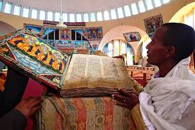

Explore the spiritual heritage and beliefs that define the people of Tigray
Religion in Tigray
1. Ethiopian Orthodox Christianity
The majority of Tigrayans follow the Ethiopian Orthodox Tewahedo Church, which has deep historical and spiritual roots in the region. The religion shapes their daily lives, traditions, and cultural celebrations.
Churches: Tigray is home to ancient rock-hewn churches, such as those in Lalibela and the Tigray Highlands.
Festivals: Religious celebrations like Timket (Epiphany) and Meskel (Finding of the True Cross) are observed with great enthusiasm.
Spiritual Practices: Fasting, prayer, and community worship are integral parts of daily life.

An ancient Ethiopian Orthodox Church in Tigray
2. Islam
A smaller percentage of the population practices Islam, primarily Sunni Islam. The Muslim community lives harmoniously alongside the Christian majority, reflecting Tigray's long history of religious coexistence.
Key Practices: Daily prayers, fasting during Ramadan, and attending mosques for worship.
Festivals: Celebrations like Eid al-Fitr and Eid al-Adha are observed with joy and community gatherings.
3. Religious Coexistence
Tigray has a rich history of religious harmony. Both Christians and Muslims contribute to the cultural diversity of the region. Interfaith dialogues and shared traditions foster unity among its people.